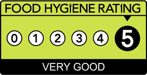

Food Hygiene Rating Scheme
The scheme helps you choose where to eat out or shop for food by giving you clear information about the businesses’ hygiene standards.
The scheme gives businesses a rating from 5 to 0 which is displayed at their premises and online so you can make more informed choices about where to buy and eat food.
- 5 – hygiene standards are very good
- 4 – hygiene standards are good
- 3 – hygiene standards are generally satisfactory
- 2 – some improvement is necessary
- 1 – major improvement is necessary
- 0 – urgent improvement is required

Food Hygiene Rating Sticker with a rating of five
What the rating covers
Ratings are a snapshot of the standards of food hygiene found at the time of inspection. It is the responsibility of the business to comply with food hygiene law at all times.
This includes:
- handling of food
- how food is stored
- how food is prepared
- cleanliness of facilities
- how food safety is managed
The food hygiene rating scheme does not provide information on the following factors:
- quality of the food
- customer service
- culinary skill
- presentation
- comfort
Understanding ratings
The rating shows how well the business is doing overall, based on standards found at the time of inspection. The ratings can be found online and on stickers which are displayed at business premises. The back of the sticker and the online rating will also show the date of the inspection by the local authority’s food safety officer.
Ratings are typically given to places where food is supplied, sold or consumed, such as:
- restaurants, pubs and cafes
- takeaways, food vans and stalls
- canteens and hotels
- supermarkets and other food shops
- schools, hospitals and care homes
A food safety officer from the local authority inspects a business to check that it follows food hygiene law so that the food is safe to eat.
At the inspection, the officer will check the following three elements:
- how hygienically the food is handled – how it is prepared, cooked, re-heated, cooled and stored
- the physical condition of the business –including cleanliness, layout, lighting, ventilation, pest control and other facilities
- how the business manages ways of keeping food safe, looking at processes, training and systems to ensure good hygiene is maintained. The officer can then assess the level of confidence in standards being maintained in the future
The rating scale
The hygiene standards found at the time of inspection are then rated on a scale:
- 5 is top of the scale, this means the hygiene standards are very good and fully comply with the law
- 0 is at the bottom of the scale, this means urgent improvement is necessary
To get the top rating, businesses must do well in all three elements which are referenced above. If the top rating is not given, the officer will explain to the business the necessary actions they can take to improve their hygiene rating.